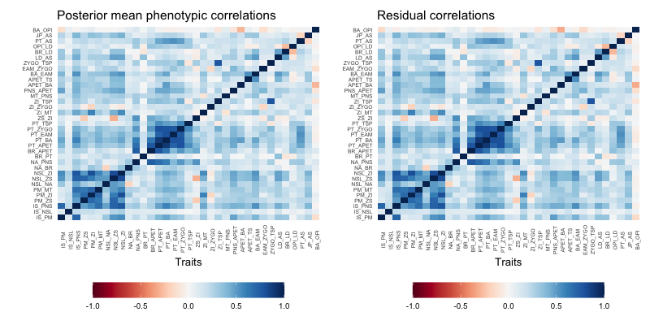

Phenotypic covariance with size and shape
Source:vignettes/phenotypic-covariance.Rmd
phenotypic-covariance.Rmdlm_phen_cov() estimates the phenotypic covariance matrix
P after the fixed effects. There is no relatedness, so no
G and no breeding values. This vignette fits all 35
log-transformed cranial distances of the mouse data. The distances are
strongly integrated (they share one size gradient), so the traits are
first reparametrised with size_shape(), and every draw is
mapped back to the log-trait scale with
back_transform().
Size and shape scores
Keeping all k - 1 shape axes makes the reparametrisation
exact; a smaller n_shape gives a lower-rank, and much
cheaper, model.
ratonesdf <- ratones_morpho
traits <- names(ratonesdf)[12:46]
log_traits <- log(as.matrix(ratonesdf[, traits]))
ss <- size_shape(log_traits)
ratonesdf <- cbind(ratonesdf, ss$scores)
c(measured_traits = length(traits), model_traits = ncol(ss$scores))
#> measured_traits model_traits
#> 35 35animal_design() builds Y and X
from a formula. With many traits, the cbind() response is
assembled from the column names.
ratones_formula <- stats::reformulate(
c("SEX", "AGE", "LIN"),
response = sprintf("cbind(%s)", paste(ss$traits, collapse = ", ")))
ratones <- animal_design(ratones_formula, data = ratonesdf)
Y <- ratones$Y
X <- ratones$X
dim(Y)
#> [1] 329 35Fit
The LKJ prior acts on correlations between size and the shape axes,
which are principal components and so expected to be nearly
uncorrelated; a firmer lkj_prior = 6 says so.
cov_fit <- lm_phen_cov(Y, X, lkj_prior = 6, iter = 800, warmup = 400,
chains = 4, cores = 4, refresh = 0, seed = 1)
#> Running MCMC with 4 parallel chains...
#> Chain 1 finished in 21.8 seconds.
#> Chain 4 finished in 22.5 seconds.
#> Chain 3 finished in 22.6 seconds.
#> Chain 2 finished in 22.9 seconds.
#>
#> All 4 chains finished successfully.
#> Mean chain execution time: 22.4 seconds.
#> Total execution time: 23.2 seconds.
cov_fit$summary(c("sigma_P[1]", "P[1,1]", "P[2,2]", "corrP[1,2]"))
#> # A tibble: 4 × 10
#> variable mean median sd mad q5 q95 rhat ess_bulk
#> <chr> <dbl> <dbl> <dbl> <dbl> <dbl> <dbl> <dbl> <dbl>
#> 1 sigma_P[1] 0.0198 0.0198 7.65e-4 7.88e-4 1.86e-2 2.11e-2 0.999 2698.
#> 2 P[1,1] 0.000394 0.000393 3.04e-5 3.11e-5 3.46e-4 4.44e-4 1.000 2698.
#> 3 P[2,2] 0.00410 0.00408 3.18e-4 3.07e-4 3.59e-3 4.62e-3 1.01 2803.
#> 4 corrP[1,2] -0.0717 -0.0720 4.99e-2 5.05e-2 -1.53e-1 1.19e-2 1.00 2652.
#> # ℹ 1 more variable: ess_tail <dbl>
cov_fit$diagnostic_summary()
#> $num_divergent
#> [1] 0 0 0 0
#>
#> $num_max_treedepth
#> [1] 0 0 0 0
#>
#> $ebfmi
#> [1] 0.9171827 1.0159910 1.0073989 1.0100553Back to the trait scale
back_transform() returns a list of arrays indexed by
trait first and draw last: P and corrP are
traits by traits by draws and sigma_P is traits by draws,
all named after the measured traits.
post <- back_transform(cov_fit, ss)
post
#> <size_shape_draws> 1600 draws, 35 traits
#> components: P, corrP, sigma_P
#> traits: IS_PM, IS_NSL, IS_PNS, PM_ZS, PM_ZI, PM_MT ...
round(draws_mean(post, "sigma_P")[1:5], 3)
#> IS_PM IS_NSL IS_PNS PM_ZS PM_ZI
#> 0.043 0.043 0.028 0.032 0.032
round(draws_mean(post, "corrP")[1:3, 1:3], 3)
#> IS_PM IS_NSL IS_PNS
#> IS_PM 1.000 0.089 0.705
#> IS_NSL 0.089 1.000 0.221
#> IS_PNS 0.705 0.221 1.000The posterior mean P on the log-trait scale is close to
the covariance of the least-squares residuals, the unpenalised estimate
of the same quantity:
P_hat <- draws_mean(post, "P")
P_ols <- cov(residuals(lm(log_traits ~ X - 1)))
round(P_hat[1:4, 1:4], 4)
#> IS_PM IS_NSL IS_PNS PM_ZS
#> IS_PM 0.0019 0.0002 8e-04 1e-04
#> IS_NSL 0.0002 0.0018 3e-04 3e-04
#> IS_PNS 0.0008 0.0003 8e-04 4e-04
#> PM_ZS 0.0001 0.0003 4e-04 1e-03
round(P_ols[1:4, 1:4], 4)
#> IS_PM IS_NSL IS_PNS PM_ZS
#> IS_PM 0.0017 0.0001 8e-04 1e-04
#> IS_NSL 0.0001 0.0016 2e-04 2e-04
#> IS_PNS 0.0008 0.0002 7e-04 4e-04
#> PM_ZS 0.0001 0.0002 4e-04 9e-04
evolqg::MatrixCompare(P_hat, P_ols)
#> correlation probability .id
#> RS 0.9991593 0.000000000 RS
#> Mantel 0.9989166 0.000999001 Mantel
#> Krz 0.9925025 NA Krz
#> PCA 0.9996050 NA PCA
plot_corr(cov2cor(P_hat), "Posterior mean phenotypic correlations") +
plot_corr(cov2cor(P_ols), "Residual correlations")
plot of chunk corr